阅读词表
| 词条 | 拼音 | 类型 | 说明 |
|---|---|---|---|
| 妇好 | fù hǎo | person | 商王武丁配偶，甲骨文中著名女性军事人物。 |
| 妌 | jìng | manual | 商王武丁夫人妇妌之名用字。 |
| 殷墟 | yīn xū | site_or_culture | 晚商都邑遗址，甲骨卜辞的重要出土地。 |
| 铜钺 | tóng yuè | bronze_item | 青铜钺，常象征军事权力。 |
| 铜戈 | tóng gē | bronze_item | 青铜戈，商周常见兵器。 |
| 殉人 | xùn rén | concept | 陪葬或随葬的人。 |
| 祭祀坑 | jì sì kēng | concept | 用于祭祀或埋藏祭品的坑穴。 |
| 盘庚 | pán gēng | person | 商王名，以迁都殷地著称。 |
| 絜 | jié | manual | 人名用字；文中为学者陈絜，音同“洁”。 |
| 人祭 | rén jì | concept | 以人作为祭品的祭祀行为。 |
| 窖穴 | jiào xué | concept | 地下储藏坑穴。 |
| 禦 | yù | manual | 古字，通“御”；文中见待核甲骨卜辞释文。 |
| 谧 | mì | manual | 安静；文中见西晋学者皇甫谧之名。 |
| 铜爵 | tóng jué | bronze_item | 青铜酒器爵。 |
| 铜镞 | tóng zú | bronze_item | 青铜箭头。 |
| 铜斝 | tóng jiǎ | bronze_item | 青铜斝，古代三足酒器。 |
| 人殉 | rén xùn | concept | 以人随葬或陪葬的行为。 |
| 肩胛骨 | jiān jiǎ gǔ | concept | 动物或人的肩部骨骼，常被加工为卜骨。 |
| 族邑 | zú yì | concept | 以部族为单位聚居形成的城邑或聚落。 |
| 神人兽面纹 | shén rén shòu miàn wén | 项目词典 | 良渚玉器上的神人和兽面复合纹样。 |
| 《合集》 | hé jí | 项目词典 | 《甲骨文合集》的简称。 |
| 后母戊鼎 | hòu mǔ wù dǐng | 项目词典 | 商代大型青铜鼎。 |
| 殷商遗民 | yīn shāng yí mín | 项目词典 | 商朝灭亡后延续生活的商人群体。 |
| 甲骨卜辞 | jiǎ gǔ bǔ cí | 项目词典 | 商代刻写在甲骨上的占卜文字。 | 刻写在龟甲兽骨上的占卜文字。 | 刻写在甲骨上的占卜记录。 | 刻写在龟甲兽骨上的占卜辞句。 |
| 夔龙纹 | kuí lóng wén | 项目词典 | 青铜器常见的夔龙形纹饰。 |
| 头盖骨 | tóu gài gǔ | 项目词典 | 颅骨顶部，文中涉及加工成碗状器物。 |
| 宫殿区 | gōng diàn qū | 项目词典 | 都邑中宫殿和王室活动集中的区域。 |
| 王陵区 | wáng líng qū | 项目词典 | 王室墓葬集中的区域。 | 王室墓葬和祭祀坑集中的区域。 |
| 绿松石 | lǜ sōng shí | 项目词典 | 一种蓝绿色矿石，常用于装饰。 | 蓝绿色矿物，古代常作装饰嵌片。 | 蓝绿色矿物，古代常作饰物。 |
| 郭沫若 | guō mò ruò | 项目词典 | 现代学者，文中涉及其对后冈H10的判断。 |
| 铜礼器 | tóng lǐ qì | 项目词典 | 用于礼仪或祭祀的青铜器。 |
| 下颌 | xià hé | 项目词典 | 下颌部位。 |
| 人牲 | rén shēng | 项目词典 | 被用于祭祀的人。 | 被用于祭祀或献祭的人。 | 被杀用于祭祀的人。 |
| 俯身 | fǔ shēn | 项目词典 | 身体向前伏下。 |
| 儒家 | rú jiā | 项目词典 | 以孔子思想及相关经典传统为核心的学派。 |
| 六经 | liù jīng | 项目词典 | 传统所称《诗》《书》《礼》《乐》《易》《春秋》。 |
| 卜辞 | bǔ cí | 项目词典 | 甲骨占卜后刻写或记录的辞句。 | 甲骨上记录占卜的文字。 | 占卜时刻写或记录的辞句。 |
| 周公 | zhōu gōng | 项目词典 | 周公旦，武王之弟。 | 周公旦，周初政治家。 |
| 商王 | shāng wáng | 项目词典 | 商朝王。 |
| 基址 | jī zhǐ | 项目词典 | 建筑物遗留下来的基础位置。 |
| 填土 | tián tǔ | 项目词典 | 填入坑穴或遗迹中的土层。 |
| 墓道 | mù dào | 项目词典 | 大墓中通往墓穴的斜坡或通道。 |
| 壁龛 | bì kān | 项目词典 | 墙壁或坑壁上凿出的供放置物品的小龛。 |
| 夔龙 | kuí lóng | 项目词典 | 青铜纹饰中常见的龙形神兽。 |
| 夯土 | hāng tǔ | 项目词典 | 把土层层夯实形成建筑基础或城墙的技术。 |
| 女红 | nǚ gōng | 项目词典 | 女子针线活。 |
| 妇妌 | fù jìng | 项目词典 | 武丁王的一位夫人，文中认为M260可能是其墓葬；妌读第四声jìng（ㄐㄧㄥˋ），传统反切为“疾政切”。 |
| 尚书 | shàng shū | 项目词典 | 儒家经典之一，文中引用《盘庚》篇。 | 保存上古政治文献和诰命的儒家经典。 |
| 差役 | chāi yì | 项目词典 | 受差遣服劳役或执行事务的人。 |
| 帝辛 | dì xīn | 项目词典 | 商纣王的王名。 |
| 战俘 | zhàn fú | 项目词典 | 战争中捕获的人。 |
| 扉棱 | fēi léng | 项目词典 | 青铜器或陶器上突起的棱脊装饰。 |
| 捆绑 | kǔn bǎng | 项目词典 | 用绳索等束缚身体。 |
| 方彝 | fāng yí | 项目词典 | 青铜礼器名。 |
| 族徽 | zú huī | 项目词典 | 族群标识，常见于商周青铜器铭文。 |
| 无逸 | wú yì | 项目词典 | 《尚书》篇名。 |
| 春秋 | chūn qiū | 项目词典 | 孔子时代相关的编年史经典。 |
| 朱砂 | zhū shā | 项目词典 | 红色矿物，古代葬俗中常用于铺垫或涂抹。 | 红色矿物颜料，古代常用于礼仪。 | 红色矿物颜料，常见于礼仪和墓葬。 | 红色矿物颜料，古代常用于礼仪和葬俗。 |
| 柱洞 | zhù dòng | 项目词典 | 考古遗迹中柱子留下的洞穴痕迹。 |
| 椁室 | guǒ shì | 项目词典 | 墓葬中放置棺木的木构外室。 |
| 殉葬 | xùn zàng | 项目词典 | 以人或物随葬。 |
| 殷商 | yīn shāng | 项目词典 | 商朝后期文化和政权。 | 商代后期以殷墟为中心的商王朝阶段。 |
| 殷都 | yīn dū | 项目词典 | 商朝后期都城区域，今安阳殷墟一带。 | 商朝后期都城区域。 | 晚商都城，通常指安阳殷墟。 |
| 燎祭 | liáo jì | 项目词典 | 焚烧祭品以祭神的仪式。 | 焚烧祭品以祭祀神灵的方式。 | 焚烧祭品的祭祀方式。 |
| 献祭 | xiàn jì | 项目词典 | 把祭品奉献给神灵或祖先。 | 向神灵、祖先等奉献祭品。 |
| 玉戈 | yù gē | 项目词典 | 玉制戈，多为礼仪性器物。 |
| 疆域 | jiāng yù | 项目词典 | 国家或政权控制、影响的地域范围。 |
| 眼眶 | yǎn kuàng | 项目词典 | 眼球所在的骨性空间。 |
| 祭品 | jì pǐn | 项目词典 | 祭祀时献给神灵或祖先的物品。 |
| 纣王 | zhòu wáng | 项目词典 | 商朝末代王帝辛。 | 商末王，文中讨论其暴虐和人祭。 |
| 羌人 | qiāng rén | 项目词典 | 西方族群，常见于商代卜辞。 |
| 良渚 | liáng zhǔ | 项目词典 | 长江下游新石器时代重要考古文化和古城遗址。 |
| 货贝 | huò bèi | 项目词典 | 作为货币使用的贝。 |
| 辗转 | zhǎn zhuǎn | 项目词典 | 反复迁移或经过多处。 |
| 铜矛 | tóng máo | 项目词典 | 青铜矛，刺击兵器。 |
| 铭文 | míng wén | 项目词典 | 铸刻在青铜器等器物上的文字。 | 器物上铸刻或刻写的文字。 |
| 陶寺 | táo sì | 项目词典 | 山西襄汾一带龙山时代重要遗址。 |
| 颈椎 | jǐng zhuī | 项目词典 | 颈部脊椎骨。 |
| 骨笄 | gǔ jī | 项目词典 | 骨制发簪。 | 骨制簪笄，用于束发。 |
青铜器词表
| 器名 | 拼音 | 类型 | 说明 |
|---|---|---|---|
| 戈 | gē | bronze_item | 古代横刃长柄兵器。 |
| 钺 | yuè | bronze_item | 大型斧形兵器或礼器。 |
| 戚 | qī | bronze_item | 古代斧形兵器或礼器。 |
| 斝 | jiǎ | bronze_item | 古代青铜酒器，圆口三足。 |
| 甗 | yǎn | bronze_item | 古代蒸食器，上甑下鬲。 |
| 彝 | yí | bronze_item | 古代盛酒器，也泛指宗庙祭器。 |
| 镞 | zú | bronze_item | 箭头。 |
| 爵 | jué | bronze_item | 古代酒器，也引申为爵位。 |
| 盉 | hé | bronze_item | 盛酒或盛水器，也用于调和酒味浓淡。 |
| 觥 | gōng | bronze_item | 商周时期酒器，多作鸟兽形。 |
| 卣 | yǒu | bronze_item | 古代盛酒器，常有盖和提梁。 |
| 甑 | zèng | bronze_item | 古代蒸食炊具。 |
| 簋 | guǐ | bronze_item | 古代盛食物的器具。 |
疑难古文字与 OCR 校读表
| 来源 | 当前文字 | 问题 | 处理 |
|---|---|---|---|
| 妣癸/多妣祭祀卜辞段落 | 乙卯卜，□宾贞：乎妇好有□于妣癸。贞：妇好有□于多妣。献祭方式是“□”。 | 原书以方框表示难以辨识或未释读的甲骨文字；不得按 OCR 误作“口”。 | 保留□占位；若后续查到可靠释文，再据原版图和专业释文人工替换。 |
| 《合集》2631 图版及正文引文 | 〔待核〕 | 原先 OCR/人工猜读为“贞：惠妇好呼燎（禀）伐。”，用户复核认为仍不正确；在线检索不易确认对应释文。 | 需要人工据原书图版、甲骨合集释文或专业数据库校读；确认前正文只保留待核说明。 |
章节导读札记
| 主题 | 札记 | 操作 |
|---|---|---|
| 暂无章节导读札记 | ||
用户札记
| 类型 | 页 | 内容 |
|---|---|---|
| 暂无用户札记 | ||
原书阅读器页 243原书物理 PDF 页 241印刷页 229
第十二章王后的社交圈
游客走进安阳殷墟博物苑（宫殿宗庙区）的大门，向左转，能遥遥看到一位女子的大理石像，手执铜钺，全身戎装，站立在自己墓穴的展示厅旁边。她就是武丁王的夫人妇好。
1976年，妇好墓被发掘出土，殷商王族的生活由此首次完整地展示在现代人眼前。商王陵区的墓葬大都已被严重破坏，但位于宫殿区西南侧的妇好墓却躲过了各种盗墓者的探寻，保存得非常完整。在武丁王的甲骨卜辞里，经常出现妇好的身影，故而，这位殷商王后的生前身后事，有很多可以讲述。
侥幸保全的王后墓
殷都王宫区西侧，是洹河溢出的湖沼。湖沼的西南有一片略微高起的台地，在武丁王营建新王宫时，这里也出现了繁荣的聚落。它距离王宫只有200米，在这里安家的人，肯定和王室关系密切。这应该就是妇好的家族，她死后也埋葬在了这里。
妇好墓，长方形墓穴，南北长5.6米，东西宽4米，深7.5米。发掘时，墓穴底部已经被地下水浸泡，很多随葬品和骨骸是从泥水中捞出的。共用16人殉葬，墓穴底部的腰坑埋有一人，椁内、棺外埋有八人，椁室顶部埋有四人，墓穴壁龛埋有三人。此外，还有殉狗六只。妇好本人的尸骨已经完全腐蚀不见，[[fn:1]] 在商代墓葬中，这比较常见，很可能是受铺撒的朱砂腐蚀所致。
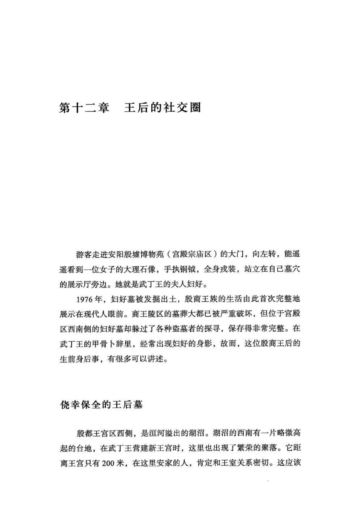
原书阅读器页 244原书物理 PDF 页 242印刷页 230
随葬品保存得非常完整，共有1928件，其中，铜器、玉器和骨器都各有数百件，铜器总重量达3250斤。很多铜器上有铭文“妇好”字样，直接证明了墓主的身份。还有铭文“后母辛”：“辛”是妇好的出生日，用天干日起名是商人的习俗；“后母”，则是她为商王生育过子女后获得的尊称。
在铜礼器中，仅鼎就有31件，最大的是一对青铜方鼎，高80厘米，重量分别是256斤和235斤。至于商人最重视的酒器，则有铜辄53件，铜爵40件，还有各种盉、觥、壶、斗、斝、卣、罐等。比较独特的炊器是一件三联甗，它与烧水的底座是一体的，上面有三个可以单独取下的蒸锅（甑）。还有一件“偶方彝”，表面铸有鸟形、夔龙纹，以及长鼻大耳的象头，器物整体像一座殿堂，顶盖如“两面坡”式屋顶，
偶方彝（图）
三联甗（图）
双虎食人头大钺（图）
下方有屋椽头造型，底座形似房屋的台基。
早商和中商时代，铜器表面的纹饰很少；但到妇好时代，青铜器表面开始铸满纹饰，显示了殷商时代的艺术和技术的提升。
妇好也是军事统帅，随葬的青铜兵器有钺四把，戈91件，镶57枚，其中的两件大铜钺有“妇好”铭文，一件有双虎食人头花纹，重18斤；一件有龙纹，重17斤。加上木柄，这两把铜钺都会超过20斤，显然礼仪性更强，并不适合做实战兵器。两件小钺铸有“亚启”铭文，属于实用兵器。部分铜戈体型轻薄，是专门用以陪葬的低成本兵器。
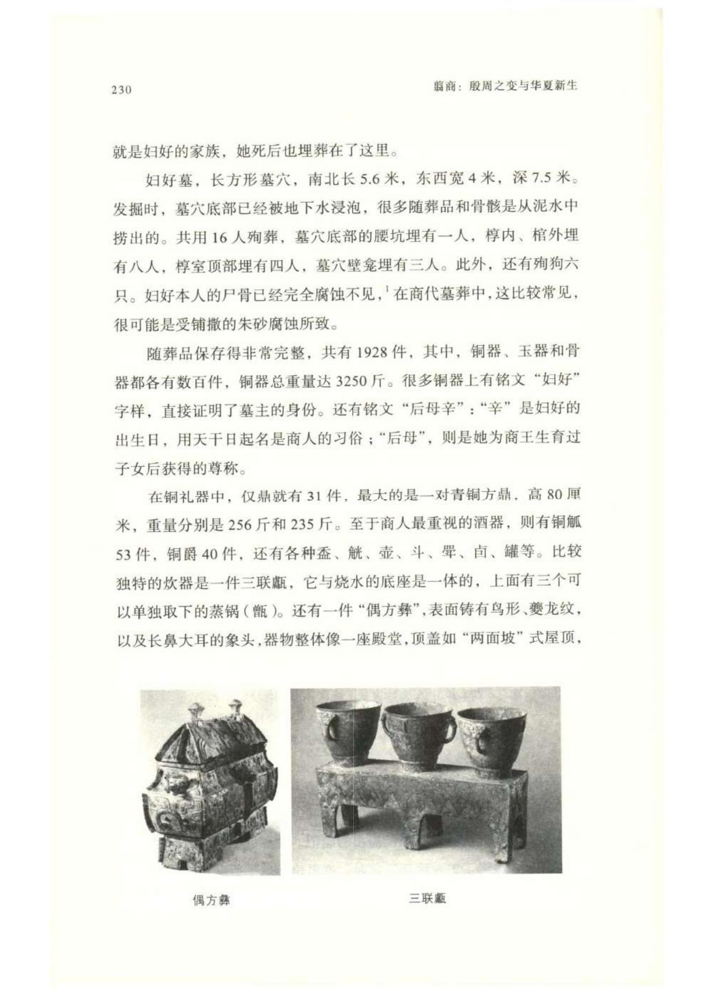
原书阅读器页 245原书物理 PDF 页 243印刷页 231
玉器中也有兵器，其中玉戈39件，玉戚九件。玉戚的造型接近钺，可能是为了增加新意（和铜钺造型有所区别），商人在其两侧增加了若干道须状装饰。有两件“玉援铜内戈”，用玉作刃部，铜作尾部。这些玉兵器的用途主要是仪式性的。
还有一件玉扳指，表面有容纳弓弦的细槽，还有钻孔用来穿绳携带，便于戴在大拇指上拉弓开弦，属于实战兵器。
此外，玉器还有大量璧、玦、璜、琮。有些玦和璜做成了龙虎等艺术造型。玉琮则保持着良渚文化的基本形状，也有些出现了变异，如边缘造出扉棱。和良渚古国时期的经典玉琮（瑶山、反山墓葬）相比，妇好墓的琮形体要小一些，也没有了良渚古国的经典神人兽面纹饰——只有一件还有良渚兽面纹的简化遗留（编号1003），但也有了较大变化，比如兽面出现在玉琮的平面上，而良渚兽面占据的是棱角的两侧。
玉戚（图）
玉援铜内戈（图）
妇好墓玉扳指（图）
玉琮（编号1003）（图）
商文化和良渚文化到底有多少联系？这是个很难回答的问题。毕竟，从良渚文化结束到商朝建立，中间有七百多年，到妇好时代，则是一千年。但妇好墓中出土的这些玉琮，却又似乎暗示着某些可能性。
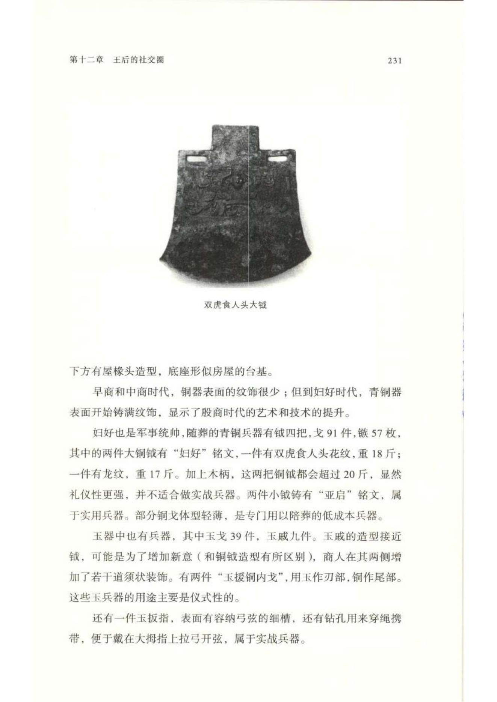
原书阅读器页 246原书物理 PDF 页 244印刷页 232
作为女性，妇好的墓中还有玉梳两件，以及大量束发的笄，其中玉笄28枚，骨笄499枚，笄的顶部多雕有鸟、夔龙或人形。纺织工具则有玉纺轮22件。此外，还有大量玉质动物形小刻刀和动物造型青铜尺，也和女红织纫工作有关。
妇好墓还出土有六件铜制“弓形器”。考古学者起初不知道这种器物的用途，后来发现它总是和马车一起出现，于是推断，它应当是挂在驭者腰前用来系挂缰绳的车马器。看来妇好本人至少拥有六辆马车。此外，墓中还随葬一对小型玉马雕塑。
除上述礼器、兵器和饰物，墓中还有各种质地的工具，比如，铜制的斧、凿、锛、锯、铲、镰、小刀、簸箕，以及“多钩形器”和“双角形器”（这可能是挂物品用的）；石制的，则有铲、锤、杵、磨石等。
妇好墓有大量玉石雕塑工艺品，如玉雕的容器（礼器）簋。玉饰体型都很小，属于日常的玩物，或者缀在纺织品上的装饰。有些人和动物雕像是三维立体造型，发掘报告称之为“圆雕”，这在殷商之前比较少见。
玉器中还有一对杵和臼，臼直径约30厘米，杵长28厘米，应该是研磨朱砂颜料用的，纹理中渗入了朱红色，研磨面非常光润。下葬时，这套杵臼是分离的，玉杵放在椁内，臼则是在墓穴上层的填土中发现的。它们应当不是制作日常化妆品的用具，因为体型比较大，位置离墓主也比较远。商人崇尚红色，在某些重要场合，如祭祀和战争，人们可能会在脸上涂抹朱红色。这套杵臼应该是为妇好的部下提供朱砂染料之用。
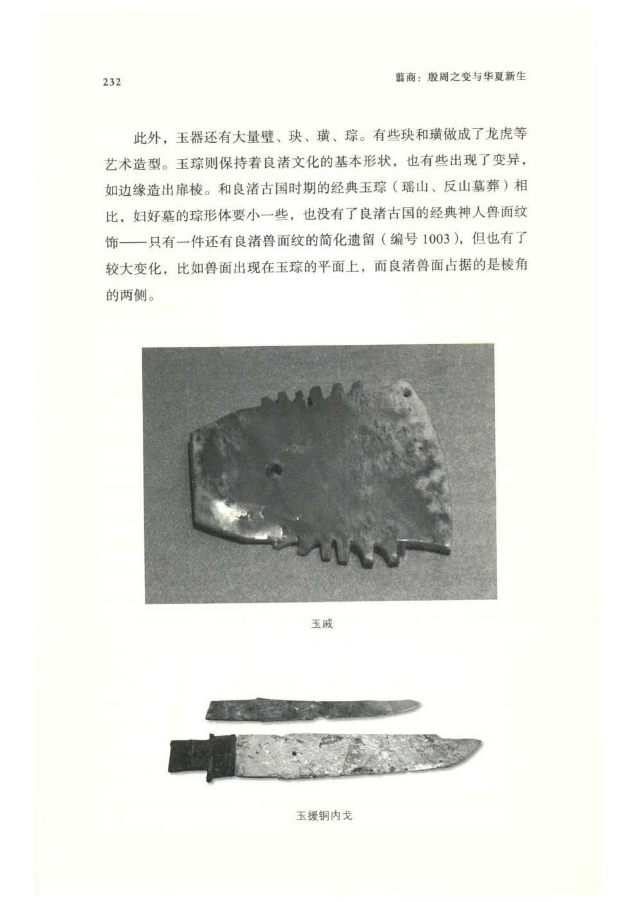
原书阅读器页 247原书物理 PDF 页 245印刷页 233
商人是用热带海洋的货贝做钱币的，妇好墓内一共发现了6880枚货贝。这些货贝都放在棺材内的墓主腰间位置，说明货贝是墓主人去往天界时最重要的财物，一定要随身携带。
“后【兔亏】母”铭文拓片（图）
墓中的铜器铭文，除了“妇好”和“后母辛”，还有一种是“后【兔亏】母”。发掘报告认为，【兔亏】也是妇好的名。其他铜器铭文，则还有“亚其”“子束泉”等人名。他们可能是妇好的亲人或同僚，把自己的铜器赠送给了妇好。
和王陵的对比
王陵的规格比妇好墓大得多。仅从墓穴面积来说，王陵大墓边长多在20米左右，墓穴底部面积也会超过100平方米，而妇好墓仅接近40平方米（7米X5.6米），要小很多，而且也没有墓道。王陵内发现的殉人动辄过百，甚至数百（这还是被破坏之后的残余），妇好墓则只有16人，相差很多。可以想象，如果王陵区大墓没有被破坏，随葬品肯定比妇好墓丰富华贵得多。
王陵大墓劫余的文物，有些和妇好墓类似。比如石雕，M1001出土有蹲坐石兽（虎首人身）像、石枭；M1500出土有石龙、石牛和石虎各一对。它们的造型和妇好墓中的玉石雕塑有些类似，但体型较大，长度为三四十厘米。这种石雕工艺品在后世的西周和春秋亦很少见。
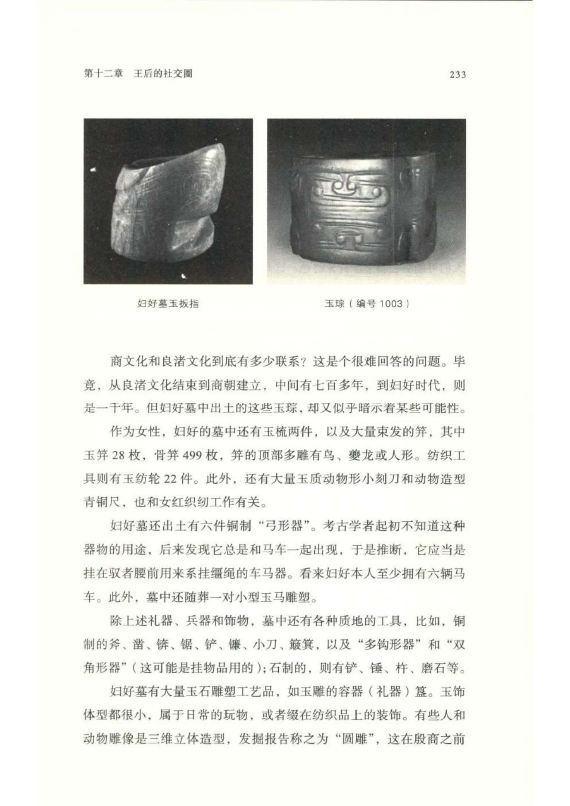
原书阅读器页 248原书物理 PDF 页 246印刷页 234
妇好墓出土铜戈91件，王陵区的随葬兵器规模则更大。比如，Ml004大墓出土铜盔超过100件（已全部破碎），铜戈72件（多数带约1米长的木柄），铜矛头731件；M1001大墓盗掘后的填土出土骨镞6583枚。这些是破坏后的残余，不代表完整数字，更可见王陵大墓之豪奢。[[fn:2]]
此外，王陵区的M160并非商王墓葬，它比各商王墓的规模小得多，著名的“后（司）母戊”大鼎，便是当地村民1939年在此墓盗挖出土。有学者据此推测，它应当是武丁王的另一位王后“妇妌”的墓。
M160只有一条墓道，1984年发掘时，发现殉38人，比妇好墓多一倍以上；[[fn:3]] “后母戊”大鼎重达1600多斤，而妇好墓中最大的方鼎仅重256斤。对比可见，这位“后母戊”的墓葬规格比妇好要高很多。至于原因，可能是妇妌死得较晚，彼时殷商国力已经更为强大，或者妇妌之子可能成了王储或下一代商王，所以她的墓葬要更豪华。
商王夫妻的生活
从甲骨卜辞可知，武丁至少有过三位夫人，分别是妣辛、妣戊和妣癸。“妣”是后世商王对她们的尊称，其中，妣辛就是著名的妇好。
妇好是武丁的第一位夫人，在武丁王时期的甲骨卜辞里，她出现过二百多次。武丁刚把王宫从河北商城搬迁到洹河南时，大约二十来岁，所以他可能是一边发动对西部山地族群的战争，一边确定王后人选的。
《合集》13925正（图）
丁酉卜，口贞（占）：妇好有受生？王占曰：吉，其有受生。
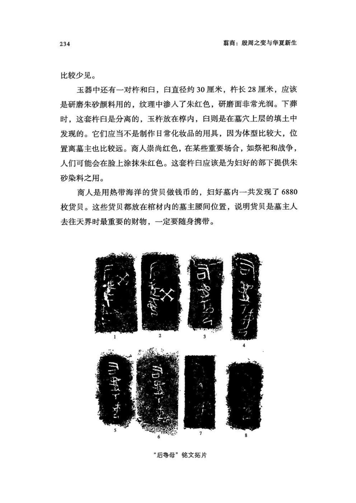
原书阅读器页 249原书物理 PDF 页 247印刷页 235
在为此占卜时，武丁最关注的是妇好能不能生育继承人。一个丁酉日，一名叫苏的占卜师为武丁王卜问：妇好能不能受孕生育？似乎牛肩胛骨烫出的裂纹不太理想，占卜师不太敢写出结果，于是，武丁自己解读裂纹的预兆：吉利，妇好会受孕生育。
从《合集》13925看，武丁王迎娶妇好的动机，似乎主要不是来自占卜，而是他预先做出了决定，占卜只是完成必要的程序而已。
妇好曾几度怀孕，为了预测能否生出儿子，武丁做过很多次占卜。
某次甲申日，占卜师（士月几又，异体字）灼烫甲骨后为武丁王卜问：妇好生育是否“嘉”（生子）？武丁解读说：丁日生育，可以生子；庚日生育，同样吉祥。结果，三十一天后的甲寅日，妇好生育了，不是儿子，是个女儿。
《合集》14002正（图）
甲申卜，款贞：妇好娩嘉？王占曰：其惟丁娩嘉。其惟庚，娩，弘吉。三旬又一日甲寅娩，不嘉。惟女。二告。[[fn:4]]
还有一次，妇好的儿子因流产或难产而死，武丁在占卜中提出怀疑：是不是自己的祖母“妣己”之灵害死了这个儿子？[[fn:5]]
“妣己”是商朝第十六王祖丁的夫人。据《史记・殷本纪》，祖丁有四个儿子接连为王，分别是阳甲、盘庚、小辛和小乙。看来列祖列宗并不会无条件地保佑后世商王家族，他们可能会因为各种原因作祟，而禳解之术是及时献上祭品。
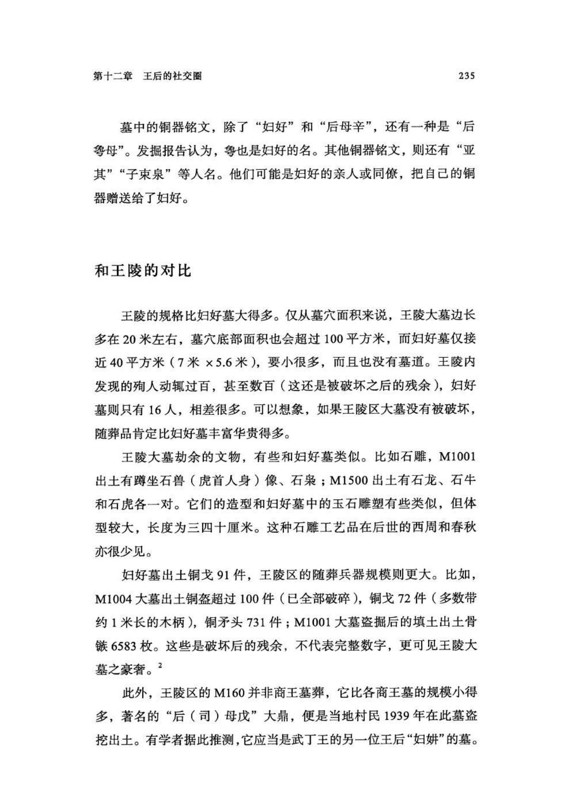
原书阅读器页 250原书物理 PDF 页 248印刷页 236
根据甲骨记载，妇好是武丁非常得力的助手。比如，妇好参与王朝礼仪活动时，曾接见过“右老”：“妇好允见右老。”（《合集》2656正） “右老”是指贵族长老代表。妇好还在“徉”这个地方接见过“多妇”：“贞乎妇好见多妇于(徉牟，异体字）。”（《合集》2641） “多妇”可能是指各贵族家族的主妇们。在外地时，妇好还会搜罗各种礼物送给武丁王，比如，武丁占卜用的有些甲骨上就刻着“妇好入”。（《合集》10133反）
〔按语：应为妇好入〕
给列祖列宗献祭是商王的重要工作，作为王后，妇好也要分担一部分。武丁的卜辞里就时常出现妇好受命主持祭天、祭先祖、祭神泉等各类祭典的记载，比如，祭祀“妣癸”和“多妣”（多妣，意为历代女性先祖）：“乙卯卜，□宾贞：乎妇好有□于妣癸。” “贞：妇好有（丝川，待查）于多妣。”献祭方式是“□”，有学者认为，通“服”字，也就是献祭战俘。[[fn:6]]
《合集》2631
贞：（异体字）妇好呼（心典，待查）（禦（御））伐。
〔待核：此处甲骨文字形未能可靠辨识，需人工校读；见文末“疑难甲骨文字词校读表”。〕（图）
尤其是，妇好还曾主持“伐”祭，即用戈或钺等砍下人牲的头颅向神灵献祭，是人祭中最为常见的杀人牲法，不过，现存卜辞并没有记载妇好献祭用人的数量（《合集》2631释文待核，见文末“疑难甲骨文字词校读表”）。
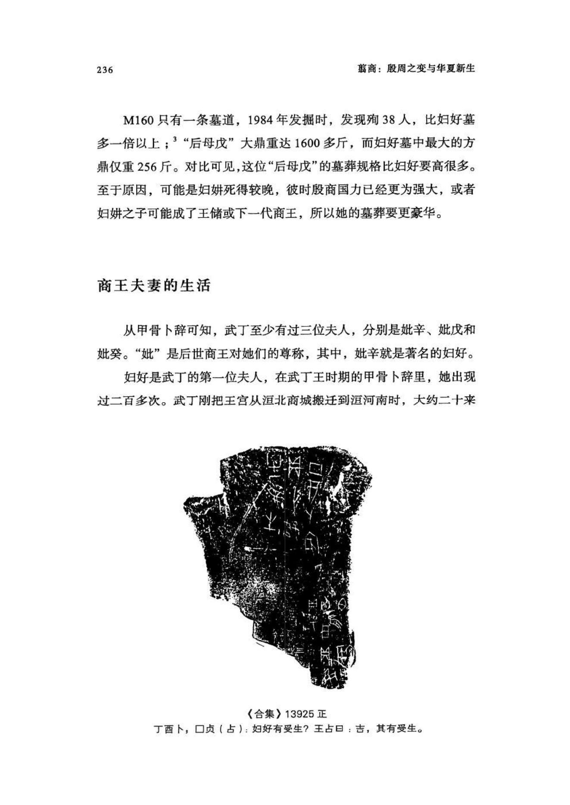
原书阅读器页 251原书物理 PDF 页 249印刷页 237
妇好墓出土有“妇好”铭文字样的两把大铜钺，其重量并不适合实战，但又都有使用痕迹，比如，重达九公斤的那把已经缺了一角，所以，它们很可能是用来砍杀献祭人牲的。武丁曾占问妇好“肩凡有疾”，我们可以据此推测，这大概是挥舞铜钺砍杀人牲过度而引发的。[[fn:7]]
武丁时期，扩张战事频繁，妇好也经常带兵出征。
甲骨记载，妇好曾作为武丁出征的先导，从“庞”这个部族征集兵员：“甲申卜，（壳几又，待查），贞乎妇好先登人于庞。”（《合集》7283）其中最著名的，也是征召人数最多、规模最大的一次，一共集结了一万三千人：“辛巳卜，贞：登妇好三千，登旅万，呼伐（羌）。”在甲骨文中，动员和编组军队称为“登”，也就是说，妇好集结三千人，其余一万人（应当）由武丁王集结。
《英藏》150正
辛巳卜，贞：登妇好三千，登旅万，呼伐（羌）。（图）
《合集》13931（图）
□申卜，争贞：妇好不延有疾？贞：妇好其延有疾？癸未卜，骰贞：妇妌有子？贞：妇妌母其有子？（图）
因甲骨残碎，敌人不详，曾有学者猜测，“呼伐”后面应当是“羌”字。在另一片甲骨上，妇好确实参与过对羌人的战争：“贞戊不其获羌。贞呼妇好执。”（《合集》176）大意是说，一位名叫“或”的将领在捕猎羌人，武丁命令妇好也去“获羌”。
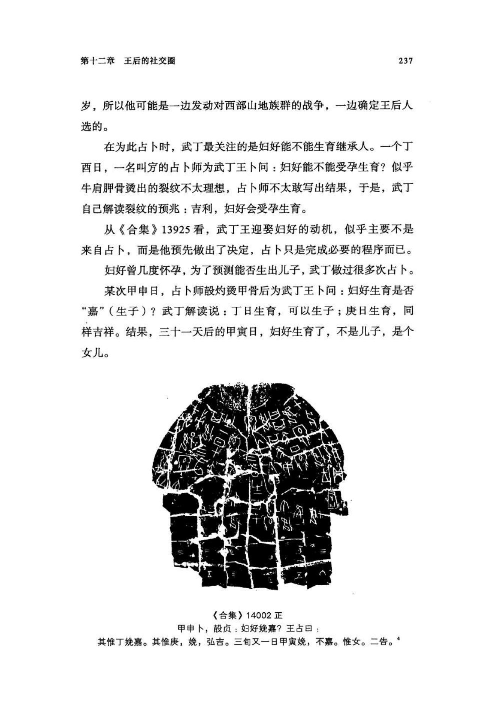
原书阅读器页 252原书物理 PDF 页 250印刷页 238
妇好还讨伐过土方和巴方，[[fn:8]] 这两个方国皆在殷都西部，今山西和陕西两省境内。此外，她也曾经征讨尸（夷）方，也即东夷，今山东省境内。
武丁还有一位夫人，名叫妇妌，年龄应当比妇好小。和妇好一样，妇妌也经常主持祭祀，[[fn:9]] 也曾带兵出征。[[fn:10]] 此外，她还有一项卜辞记载中妇好很少参与的工作，就是管理商王的农庄——卜辞里有多次提及妇妌监督收获谷物，祈祷丰年。
妇好最后死于疾病。在她病重期间，武丁曾频繁地向各位祖先献祭，祈祷他们保佑妇好健康。而在妇好病重时，妇妌刚好怀孕了，于是，武丁占卜妇好病情和妇妌孕产的内容出现在了同一片龟甲上。
龟甲左右两边占问的是同一件事，但分肯定和否定两种结果。右侧是武丁希望出现的结果，“妇好不延有疾”（病情不会加重），以及“妇妌有子”；左侧是不希望出现的结果，“妇好其延有疾”，以及“母（毋）其有子”（妇妌不会生儿子）。
有卜辞显示，妇妌被后世商王尊称为“妣戊妌”。（《屯南》4023）这说明她出生日的天干是戊，也是著名的“后母戊鼎”和王陵区M160墓的主人。
《帝王世纪》记载的妇好之子
武丁是商朝历史上一位很重要的王，奠定了殷都的格局以及商朝后期的疆域，遂被后世称为“高宗”。
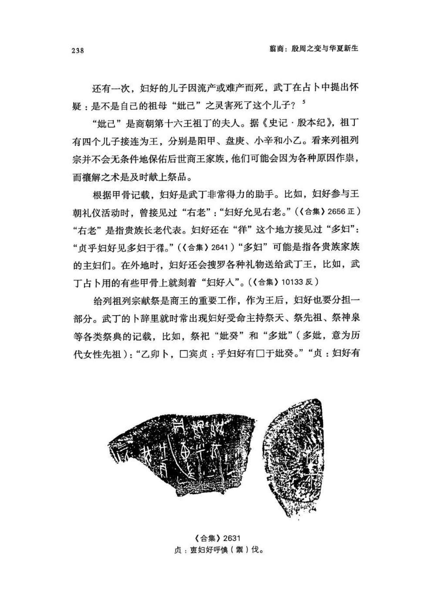
原书阅读器页 253原书物理 PDF 页 251印刷页 239
甲骨卜辞没有记载他的在位时间，但《尚书•无逸》记载，周朝建立后，周公在一次对殷商遗民的讲话中曾提到高宗武丁“享国五十有九年"。[[fn:11]] 我们不知道他几岁继位，即使只有十岁，也意味着活了近七十岁。
〔按语：衣食无忧者长寿〕
在殷商，从盘庚到纣王，中间一共有十二位商王，历经二百多年，[[fn:12]] 可见，武丁王在位时间几乎占了四分之一。而在传世的史书里，完全没有出现过武丁的夫人，倘若没有殷墟甲骨和墓葬，我们将完全不知道妇好和妇妌的存在。
不过，妇好有个儿子“孝己”曾经出现在西晋皇甫谧的《帝王世纪》：“初，高宗有贤子孝己，其母早死。高宗惑后妻之言，放而死，天下哀之。”[[fn:13]]
关于王子“孝己”，更早的史书从未有过记载，但出土甲骨能够证明。在武丁之子祖庚和祖甲两位王的卜辞里，曾经祭祀一位“兄己”；[[fn:14]] 到祖甲的儿子庚丁（康丁），又称父亲的这位“兄己”为“小王父己”；[[fn:15]] 到最末两代商王帝乙和帝辛（纣王），又称之为“祖己”。[[fn:16]] 看来，后世历代商王皆承认这位太子的商王身份和接受祭祀的资格。
武丁王实在太长寿了，他的夫人和儿子大都死在了他的前面。至于孝己是不是被流放而死，已经难以证实，但从时间顺序来看，他有可能是妇好所生。
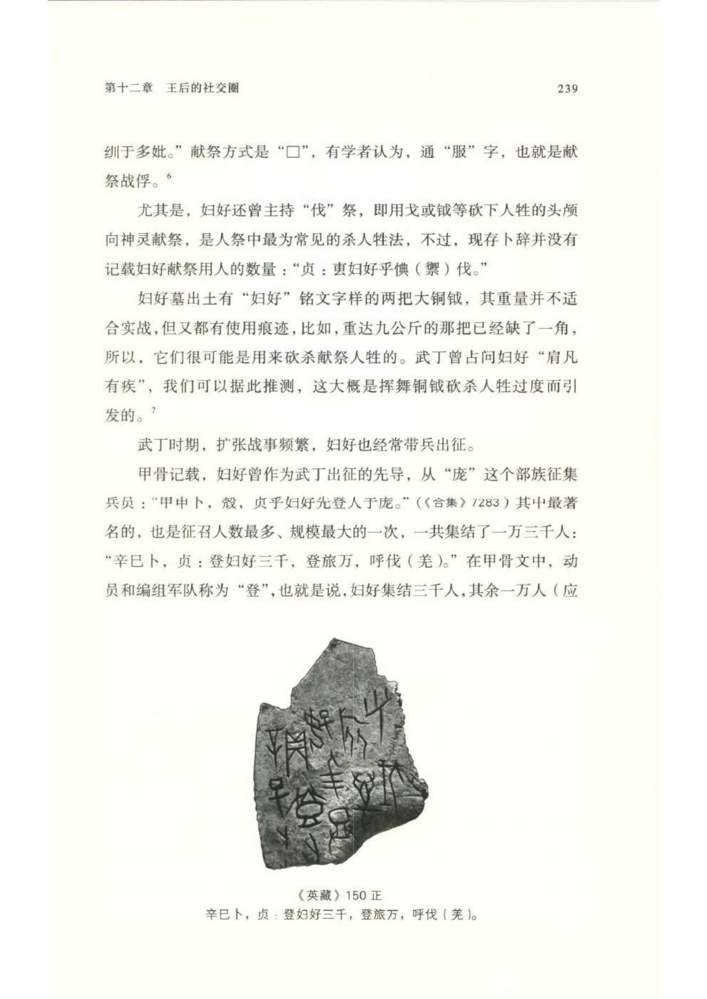
原书阅读器页 254原书物理 PDF 页 252印刷页 240
至于“孝己”中的“孝”字，在甲骨卜辞里面没有出现过，不仅这位王子，卜辞中所有商朝帝王，都没有用“孝”做称呼的。这或许是到更晚的时代，比如秦汉时期的人加上去的。
《帝王世纪》的信息来源也是一个谜。这本书写作于4世纪初，比司马迁晚了四百年左右，没人知道它为什么能提供司马迁没有记载的史事。看来，有些历史碎片虽然没有进入儒家的“六经”，也没载入《史记》，但从商周到秦汉三国，它们一直在阴影中流传。
〔按语：司马迁有大批史料，现代不能轻易质疑甚至否定。〕
妇好去世时，武丁王还在世，并在退河北的王陵区为自己建造了坟墓，但为什么王后不埋葬在王陵区，而留在自己娘家，这似乎有点不好解释。不过，这也让她幸运地躲过了商朝灭亡时王陵区遭受的大洗劫。
〔按语：联姻〕
妇好家族的生活
妇好墓不是一个孤立的存在，它位于一片家族墓地之中，有些墓葬已经被盗，有些则被村民院落压住而无法发掘。
1976年，安阳考古工作队在妇好墓周边的小屯村北发现殷商大墓六座，随后发掘了其中相邻的两座（在妇好墓以东22米处），编号为小屯村北M17和M18。两墓保存较好，和妇好墓时代接近，应当属于妇好家族的成员。
M17墓主的尸骨已朽，墓内有殉人两名，狗两只。
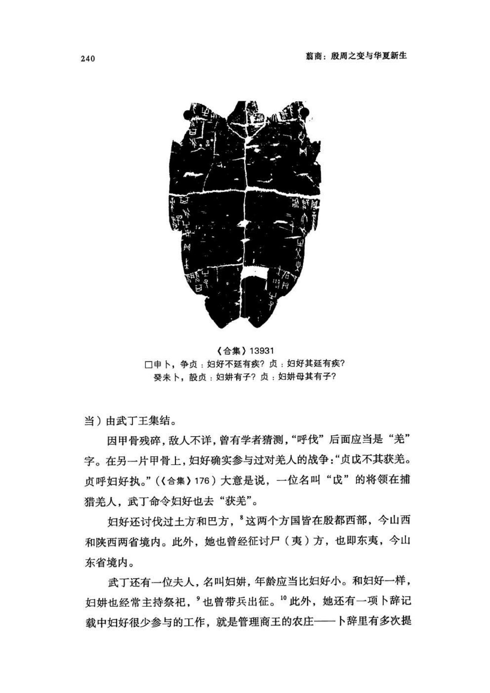
原书阅读器页 255原书物理 PDF 页 253印刷页 241
M18墓主是年龄在三十五岁到四十岁间的贵族女性，墓内有殉人五名，狗两只。可识别的殉人，都是男性青壮年。有一人埋在填土中，其余四人则在椁内，其中，有两人肩部各扛铜戈一件，一人的铜戈边有铜镞十枚，显然，这二人是墓主的卫士。
M18随葬有铜礼器24件，兵器则有铜戈九件，玉戈和玉戚各一件。和妇好墓相比，规格要低得多，随葬铜器的总重量为178斤，只是妇好墓的约二十分之一，但这位女墓主应该也是拥有家族武装的政界活跃人物，随葬的朱书玉戈援部尚存墨笔书写的七个字（见下图），大意为在“北”捉获或献祭了某些敌人。
M18所出朱书玉戈细部摹本（图）[[fn:17]]
此外，墓中还有一件重八斤、口径约33厘米的铜盘，盘内刻有一条蟠龙纹，龙的身边还有一条小型夔龙纹，外圈则围绕着一周鱼纹。
在商代贵族墓葬中，龙形并不算普遍，基本只有和王室有亲缘的墓主才能使用。M18的这件铜盘，不仅与四千多年前陶寺贵族墓中的彩陶龙盘造型相似，而且还有甲骨文里特有的代表神圣意义的角，这说明龙崇拜一直辗转延续千年。
〔按语：龙，或许是银河的象形。〕
M18随葬的铜礼器虽不太多，但族徽铭文有好几种。属于墓主本人的，可能是“子（箭头符号向上）母”：“子”，表示墓主的先祖是一位王子；（箭头符号向上） , 应该是她的名。其他铭文的铜器，可能是亲友赠送给墓主的。其中，有一位叫“子渔”的，“渔”字是三股水流里的四条鱼，造型复杂而精美。“子渔”经常出现在武丁王时期的甲骨卜辞中，[[fn:18]] 可见是王朝重臣。由此，这位“子渔”可能和M18墓主有亲戚关系，所以赠送给她铜尊和铜斝各一件。在M18的随葬青铜器中，这两件比较重，也比较精致。[[fn:19]]
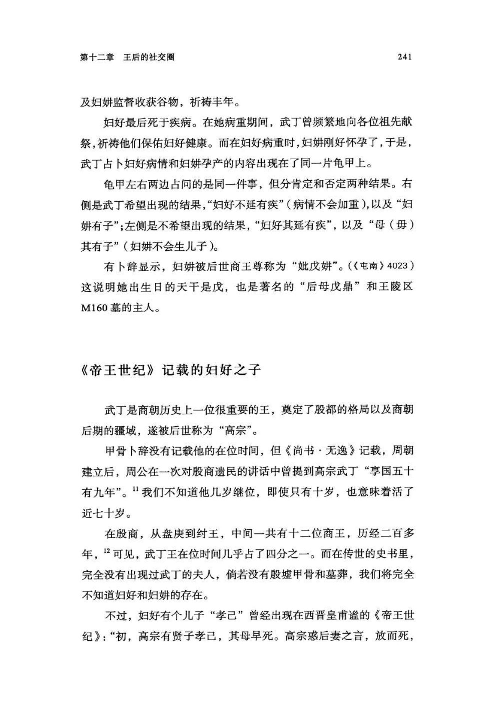
原书阅读器页 256原书物理 PDF 页 254印刷页 242
妇好墓所在这片墓区的西侧和南侧是居住区，密集分布着多座面积100平方米左右的房子。在武丁王时期，殷商的经济水平还不算太高，可能中级以上的贵族才能住这种房子。
其中有一座近方形的建筑F29，离妇好墓约50米，可能是妇好家族的宗庙。它的南边庭院内有两块方形夯土基址（F30和F31），上面没有柱洞等建筑遗迹，但有多座祭祀坑，应该是人们祭祀先祖的场地。妇好死后，她的族人可能就是在这里为她献祭的。
这里共发掘17座祭祀坑，除有一座埋了一只狗外，其余皆埋一到三人不等，共27人。
人祭坑分为两种。一种埋的是全躯的儿童，共13名，其中，有五座坑埋的是单人，有四座坑埋的是两人。这些儿童多为俯身，多佩戴简单的玉饰或蚌片胸饰、小骨珠和绿松石饰物，没有明显捆绑和挣扎的痕迹，像是处死后放进坑内的。妇好和M18墓主都是女性高级贵族，可能生前都喜欢孩子，所以后人会给她们献祭一些打扮得漂漂亮亮的儿童。
另一种埋的则是男性青壮年，每座坑埋一到三人，都是被砍了头后埋入的。砍头的过程应该颇为粗野，有些人体的颈椎上还带着颚骨，有些人头上则有很多砍痕，如M53中的两颗人头的砍痕主要集中在脸颊和下颌部分。这些迹象表明，人牲被砍头时应该没有被扯住脖子，刀斧遂频繁地砍到了脸上。
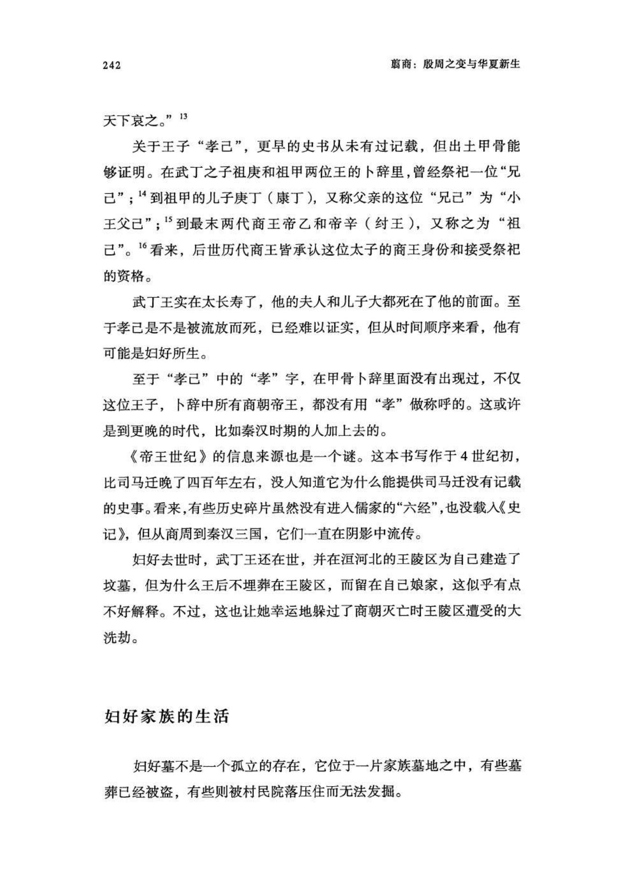
原书阅读器页 257原书物理 PDF 页 255印刷页 243
M18随葬铜盘拓片与随葬铜器铭文（族徽）（图）
M64人牲照片（图）
比较特殊的是埋单人的M64。人牲的两臂被反绑在背后，只砍下了他的头盖骨，大部分头骨还和身体相连，包括脸部、眼眶和后脑勺。他被扔进祭祀坑时可能还没有死，因为其他被砍头的尸骨都是直身，而他呈侧卧欠身挣扎姿态，头盖骨就在自己的胸前。这很可能是蓄意地虐杀，献祭者想要欣赏人牲被砍掉头盖骨之后的挣扎和喊叫，由此获得刺激和满足感。不管是用刀或钺，能如此整齐、完整地砍下人的头盖骨都是一件很困难的事，所以又有两种可能：一，献祭者是用锯子开颅的；二，操作者已经熟能生巧，可以顺利地砍下完整无缺的头盖骨。
妇好家族这片聚落没有一直繁荣下去。妇好死于殷墟二期的早段，此后四五十年，商朝开始进入殷墟三期阶段。从此，王宫西南这片高地上已经没有大型房屋，也不再有贵族墓葬，居民似乎换成了普通人。
到殷墟四期，这里出现了一些窖穴，发掘报告推测，它们应该是王宫储存谷物的仓库。但这些窖穴规模很小，直径只有不到2米，最深处也不过三五米，而且数量很少，不超过十个。商王朝的仓储区显然不会这么寒酸。
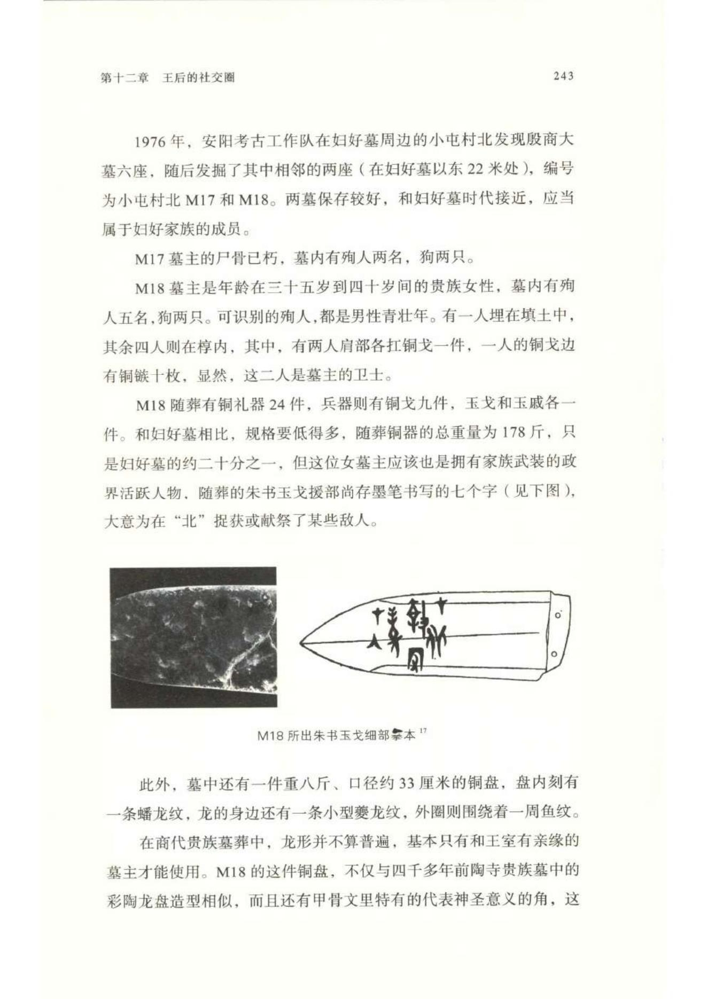
原书阅读器页 258原书物理 PDF 页 256印刷页 244
妇好家族出自王室，且又和王室联姻，按照商代的世袭原则，应该不会在几十年内家道中落成一般民众，所以，他们很可能是搬走了，去了稍远的某个地方重新建立族邑。而他们曾经生活过的这块小高地，则成了王宫某些下等差役人员的住所。妇好和“子（箭头符号向上）母”这些贵族的坟墓，也就逐渐被人遗忘。[[fn:20]]
周灭商后，已经没人记得这里曾是王后及其家族的坟墓，从而幸运地躲过了周人对商王宫和王陵的报复性破坏。
注释
1中国社科院考古所：《殷墟妇好墓》，文物出版社，1980年。
2梁思永、高去寻：《侯家庄• 1001号大墓》，（台北）“中研院”史语所，1962年；《侯家庄• 1004号大墓》，1970年，第33—35、133—154页。
3中国社科院考古所安阳工作队：《殷墟259、260号墓发掘报告》，《考古学报》1987年第1期。
4卜辞中的“二告”，可能是解释当初的预测为何没实现，这涉及兆纹的解读，现在已经无法完全了解。
5《东京》979 : “贞：妣己害妇好子？ ”
6《合集》94正、《合集》2607，以及郭沫若《卜辞通纂考释》别一，科学出版社，1983年。另，卜辞中还记载妇好也曾主持燎祭，《合集》2641：“贞勿乎妇好往寮。”
〔按语：此处「寮」上部为一横。〕
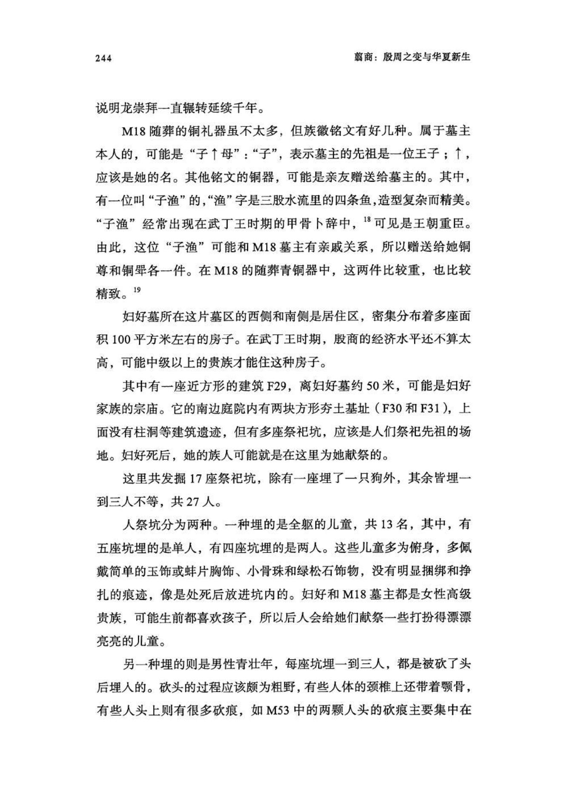
原书阅读器页 259原书物理 PDF 页 257印刷页 245
7《合集》709正。历代商王的卜辞都时常占问“肩凡”问题，大概和他们负责祭祀有关。另，有些学者将“肩”释读为“骨”。
8《合集》6412 : “勿乎妇妌伐龙方。”
9《合集》8035：“贞：翌辛亥乎妇妌宜于磐京？ ”意思是令妇妌在磐京举行“宜祭”。
10《合集》6585：“勿乎妇妌伐龙方。”
11《尚书•无逸》：“其在高宗，时旧劳于外，爰暨小人。作其即位，乃或亮阴，三年弗言。其惟弗言，言乃雍。不敢荒宁，嘉靖殷邦。至于小大，无时或怨。肆高宗之享国五十有九年。”
12《史记正义》引《竹书纪年》：“自盘庚徙殷至纣之灭，七百七十三年，更不徙都。”这个时间无疑太长了，有学者认为“七百”当是“二百”之误。
13《太平御览》卷八三引《帝王世纪》。
14《合集》23477 : “癸亥〔卜〕，贞：兄庚歲…眾兄己更（惠）…”“贞：兄庚裁梁庚〈兄〉己其牛”。
〔按语：「眾」，最近似。〕
15《合集》28278 :“…小王父己。”
16《合集》35865：”〔己〕缔卜，贞：王〔（丝女，待查）（宾）〕且（祖）己祭，〔亡尤〕。”
17 陈絜（洁）：《小屯M18所出朱书玉戈与商人东进交通线》，《故宫博物院院刊》2019年第3期。关于释义，学界说法不一。可参见中国社科院考古所安阳工作队《安阳小屯村北的两座殷代墓》；吴雪飞《安阳小屯18号墓出土玉戈朱书考》，《殷都学刊》2016年第2期。
〔按语：陈絜，男，南开〕
18 参见中国社科院考古所安阳工作队《安阳小屯村北的两座殷代墓》，第515页。
19 以上关于M17和M18的考古信息、数据及图片，未注明出处的，皆来自中国社科院考古所安阳工作队《安阳小屯村北的两座殷代墓》。
20 [[editor-fn:1]]以上关于房屋和祭祀坑的发掘报告及图片出自中国社科院考古所《安阳小屯》，世界图书出版公司，2002年。
〔编者注1〕大量的甲骨文，异体字，无法校核。以后应特别注明去看原件。
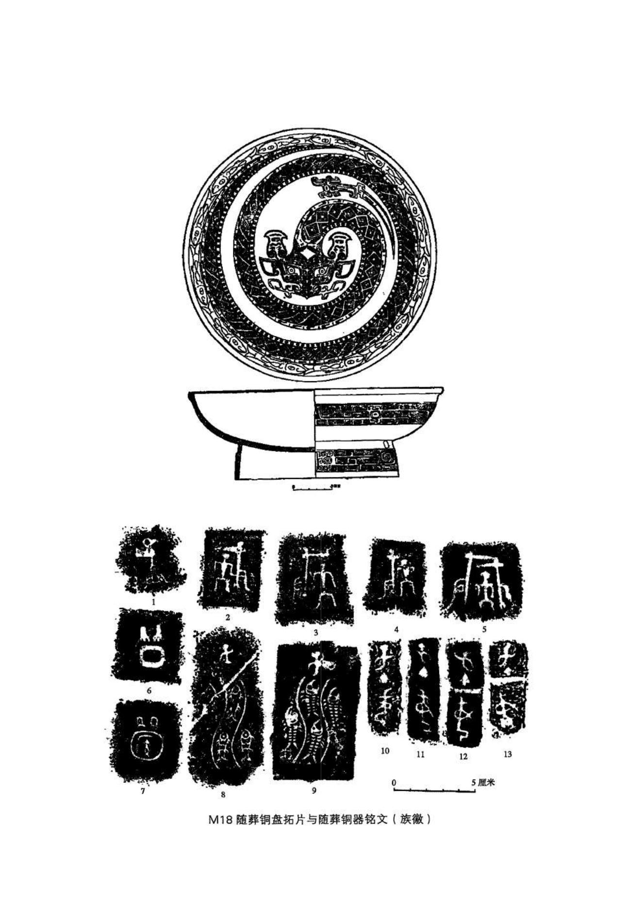
原书阅读器页 260原书物理 PDF 页 258印刷页 246
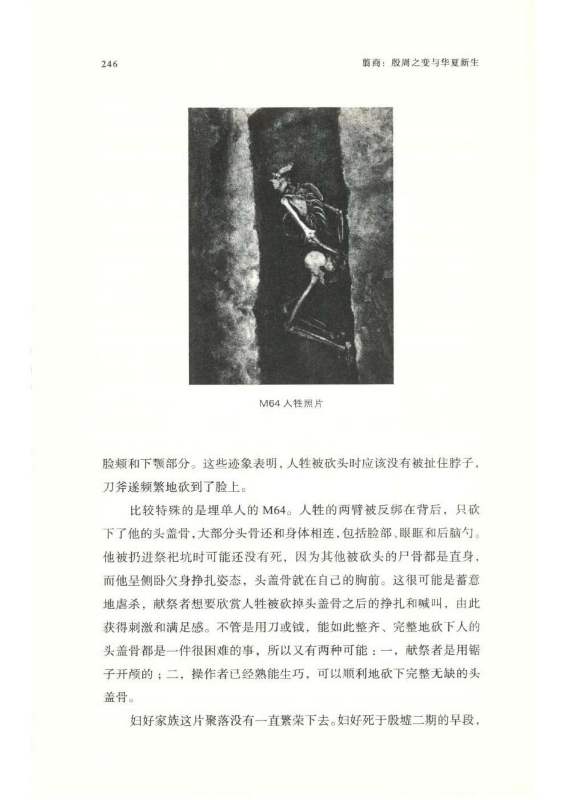
原书阅读器页 261原书物理 PDF 页 259印刷页 247
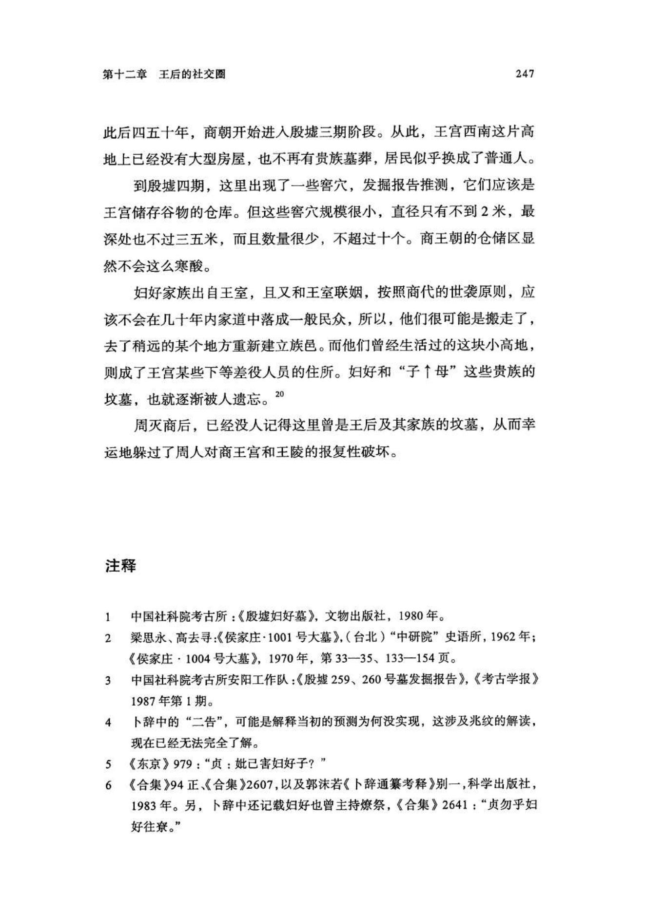
原书阅读器页 262原书物理 PDF 页 260印刷页 248
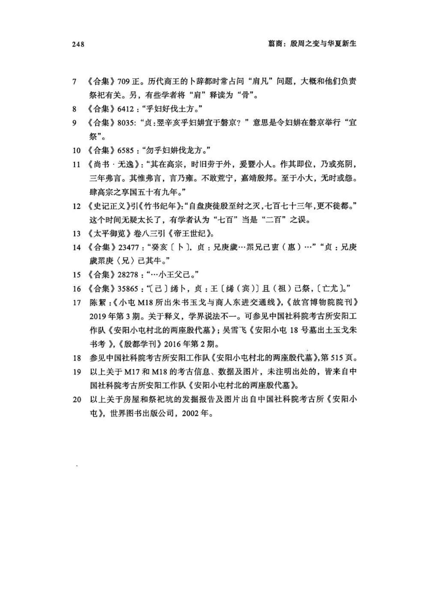
编辑札记
标记
先在正文中选择文字，再输入拼音；可用“拼音；简注”。